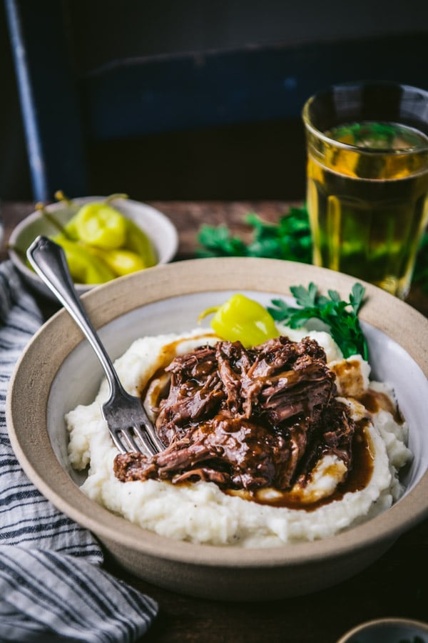

Mississippi Pot Roast

Description
This is the only roast I've ever had that is pure addiction. An old girlfriend made this for me once and from there on I was hooked. I wanted it all the time and could eat it every day. Its simplicity makes it even better as you just put in the crock pot and forget about it while enjoying the smell of the cooking process all day long.
Ingredients
-8 Pepperoncini (or more!)
-1 Au Jus gravy mix packet
Steps
1. Place Chuck Roast in crock pot. Feel free to pat it down with paper towels a bit before hand
2. Pour Ranch and Au jus packets over roast
3. Put as many Pepperoncini as desired in the pot while keeping several on top of the roast
4. Cut the butter up so it can be split through the roast
Cook on low for at least 8 hours